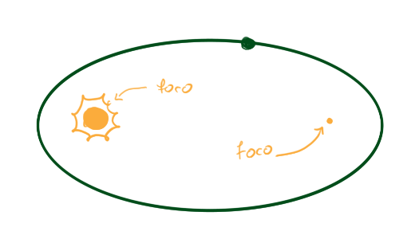
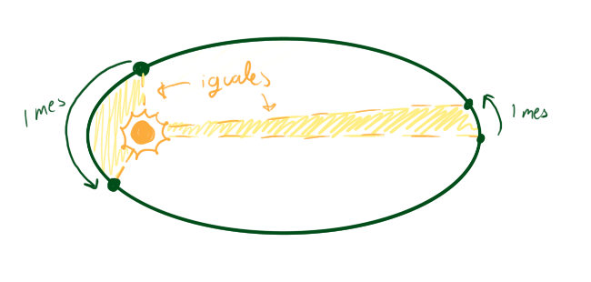
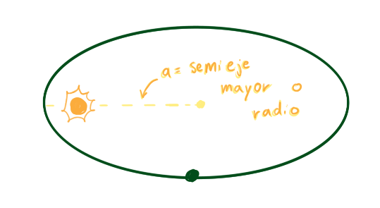

¿Alguna vez te has preguntado como funciona el movimiento planetario? ¿Crees que todos giran en circulo alrededor del Sol?
Preparate para averiguar como en realidad funciona nuestro sistema solar!
Kepler fue un astrónomo alemán, nacido en 1571. El formuló sus leyes basándose en el trabajo de Tycho Brahe, quien realizó algunas de las mediciones más detallada del movimiento del sol y los planetas de la época.
Los planetas giran alrededor del Sol en una órbita en forma de elipse, y el Sol está en uno de los focos de la elipse

Si imaginamos una linea que une al planeta y al Sol, y esta va coloreando la elipse de la órbita conforme el planeta gira, entonces esa área pintada siempre será del mismo tamaño si medimos un tiempo determinado, sin importar donde empieze el planeta.

Esto quiere decir que si un planeta avanza más rápido cuando está cerca del sol y más lento cuando esta lejos de la estrella.
El tiempo que toma un planeta en girar alrededor del Sol al cuadrado es proporcional a su distancia promedio al Sol al cubo.

Toda esta información fue obtenida de: